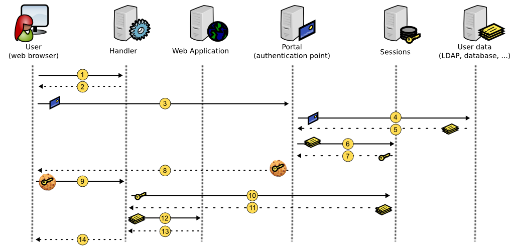

Présentation
LemonLDAP::NG est en WebSSO (Single Sign On) modulaire basé sur les modules Apache::Session. Il simplifie la construction d'une aire protégée avec peu d'impact sur les applications.
Il gère à la fois les authentifications et les autorisations et fournit des en-têtes HTTP pour la traçabilité. Vous vouvez ainsi avoir une protection AAA complète pour votre espace web tel qu'indiqué ci-dessus.
Architecture
Composants principaux
Bases de données
Nous appelons “base de données” un dispositif dans lequel nous pouvons lire et écrire des données. This can be a file, an LDAP directory, …
Nous scindons les bases de données en deux catégories :
Les bases de données externes: non gérées par LemonLDAP::NG, par exemple la base des utilisateurs
Les bases de données internes: utilisées seulement par LemonLDAP::NG
Les principales bases de données externes sont :
Authentification: comment authentifier les utilisateurs
Utilisateurs: où trouver les données utilisateurs
Mots-de-passe: où changer les mots-de-passe
Les principales bases de données internes sont :
Cinématique
login

Lorsqu'un utilisateur tente d'accéder à une application protégée, il est intercepté par l'agent (handler)
Si le
cookies SSO n'est pas détecté, l'agent redirige l'utilisateur vers le portail
L'utilisateur d'authentifie sur le portail
Le portail examine les données d'authentification
Si l'authentication est acceptée, le portail récupère les données de l'utilisateur
Le portail crée une session et y stocke les données
Le portail récupère la clef de session
Le portail crée le
cookie SSO avec la clef de la session comme valeur
L'utilisateur est redirigé vers l'application demandée avec son nouveau cookie
L'agent récupère la session en utilisant la valeur du cookie
Il stocke ces données dans son cache
L'agent vérifie les droits d'accès à l'application et envoie des en-têtes HTTP à l'application protégée
L'application protégée renvoie sa réponse à l'agent
Celui-ci la renvoie à l'utilisateur
Handler will then check SSO cookies for each HTTP request.
Déconnexion
Cas général:
L'utilisateur clique sur le bouton déconnexion du portail
Le portail détruit la session et redirige l'utilisateur sur lui-même avec un
cookie SSO vide
L'utilisateur est redirigé vers le portail et son
cookie SSO est vide
LemonLDAP::NG peut également intercepter les requêtes de déconnexion des applications protégées, avec différent comportements :
Déconnexion SSO: la requête n'est pas transmise à l'application, seule la session
SSO est fermée
Déconnexion applicative: la requête est transmise à l'application mais la session
SSO n'est pas détruite
Déconnexion SSO et applicative: la requête est transmise à l'application et la session
SSO est fermée
Après déconnexion, l'utilisateur est redirigé vers une URL configurée ou vers le portail.
Expiration des sessions
The session expires after 20 hours by default.
Les agents disposent d'un cache de session d'une durée de vie par défaut de 10 minutes. Ainsi pour les agents installés sur des serveurs physiquement différent de celui hébergeant le portail, un utilisateur dont la session a expiré peut toujours être autorisé jusqu'à expiration du cache.
Les sessions sont effacées par des tâches planifiées. N'oubliez pas d'installer les fichiers cron !
Authentification inter-domaines (CDA)
Pour des raisons de sécurité, un cookie fournit par un domaine ne peut être transmit à un autre. Pour étendre le
SSO sur plusieurs domaines, un mécanisme inter-domaines est intégré à LemonLDAP::NG.
-
L'utilisateur tente d'accéder à une application protégée d'un autre domaine
L'agent n'intercepte pas de
cookie SSO (car il n'est pas dans le même domaine) et redirige l'utilisateur vers le portail
Le portail reconnaît l'utilisateur par son
cookie SSO et voit qu'il sollicite une application d'un domaine différent
Portal redirige l'utilisateur vers l'application demandée avec son identifiant de session en paramètre de l'
URL L'agent détecte le paramètre d'
URL et crée le
cookie SSO dans son domaine, avec la valeur de l'identifiant de session
Mécanismes d'authentification, d'autorisation et de traçabilité (AAA)
Authentification
Si un utilisateur n'est pas authentifié et tente de se connecter à une application protégée par un agent compatible LemonLDAP::NG, il est redirigé vers le portail.
Les étapes du processus d'authentication sont :
Control asked URL: prevent
XSS attacks and bad redirections
Recherche d'une session valide : détecte les sessions
SSO, applique les contraintes configurées (1 session par utilisateur, 1 session par
IP, …)
Extrait les informations du formulaire: récupère le couple compte/mot-de-passe, le certificat, une variable d'environnement (suivant le module d'authentification)
Récupère les informations utilisateur : contacte la base de données utilisateurs pour les obtenir
Installe les macros : calcule les macros demandées
Installe les groupes : interroge la base de données utilisateurs pour trouver les groupes
Installe les groupes locaux : calcule les groupes demandés par la configuration
Authentifie : contacte le dispositif d'authentication pour vérification
Autorise la session : vérifie le droit d'ouvrir une session
SSO
Stocke: stocke les données utilisateurs dans la base de données des sessions
Construit les cookies: construit les
cookies SSO avec l'identifiant de session
Redirect: redirect user on protected application or on Portal (applications menu)
Les cookies SSO de LemonLDAP::NG sont générés par Apache::Session, ils sont aussi sûrs que tout cookie basé sur un aléa de 128 bits. Vous devriez utilisez les options securedCookie pour éviter le vol de session. (since version 1.4.0 you can use SHA256 for generating safer cookies)
Autorisations
Les autorisations sont vérifiées seulement par les agents (handlers). Une autorisation est définie pas :
Une expression sur l'
URL (ou
default pour les URLs ne correspondant pas aux règles)
Une règle d'accès
Les autorisations sont définies à l'intérieur d'un hôte virtuel (virtualhost) et n'ont d'effet que sur lui. Il n'y a pas d'autorisation globale, à l'exception de la règle accordant l'ouverture de session dans le portail.
Les valeurs des règles d'accès peuvent être :
accept: tout utilisateur authentifié est autorisé
deny: personne n'est autorisé
skip : tout est ouvert !
unprotect : tout est ouvert, mais les utilisateurs authentifiés sont vus comme tels
logout_sso, logout_app, logout_app_sso: intercepte les requêtes de déconnexion
Perl expression: perl code snippet that returns 0 or 1
Quelques exemples:
\b means start or end of a word in PCRE (Perl Compatible Regular Expressions)
Voir le chapître Écrire les règles et en-têtes.
Traçabilité
Trace des authentification
Trace des accès aux applications
L'agent fournit à Apache l'identifiant de l'utilisateur (paramètre whatToTrace), ainsi vous pouvez voir l'identifiant dans les journaux d'accès d'Apache.
La réelle traçabilité doit être faite par l'application elle-même car les journaux du SSO ne peuvent interprêter les transactions.
LemonLDAP::NG peut exporter des en-têtes HTTP qu'on l'utilise sur une reverse-proxy ou directement sur le serveur à protéger
An HTTP header is defined by:
Les en-têtes sont définies à l'intérieur d'un hôte virtuel (virtualhost) et n'ont d'effet que sur lui. Il n'y a pas d'en-tête global.
The header value is a Perl expression, returning a string.
Quelques exemples:
Voir Écrire les règles et en-têtes pour plus d'informations.